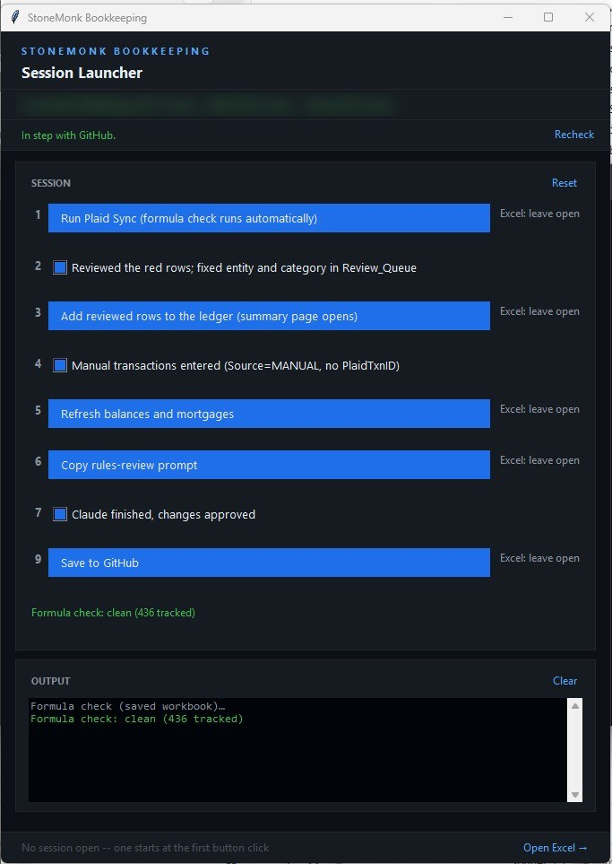

My Bookkeeping Checklist Learned to Say No
What changes when a bookkeeping checklist becomes buttons that can refuse?
The steps stop depending on my attention that day. A checklist works only if I read it and follow it in order. Buttons that check the workbook, the bank feed and the test suite before they act turn the same steps into controls, and the first time one of them refused me, it was right.
Behind me right now is a literal shelf of old notebooks, time captured on many spiral notebook pages in permanent black ink. Each page is a month of my rental bookkeeping in a Bic ballpoint pen: columns I drew with a ruler, handwritten totals, side notes about things to remember next year, and numbers scratched out and written again when I got one wrong. Every month began with a blank page and a wooden ruler, drawing columns by hand like a surveyor marking boundaries. There was a rhythm to writing the same property locations, the same recurring utility names, and the same categories of expense year after year. It was a meditative drudgery that transformed cold transactions into a physical history.
My 2026 notebook is still on my desk in its usual spot. These days I mostly don’t touch it. Since I moved my bookkeeping onto the Plaid API and an Excel workbook (the story of that move is here), the workbook keeps a running balance every time I sync, and a session takes maybe a fifth of the time the notebook did. Now the bottleneck is me looking over data and thinking about what I might do better.
This post is about the last piece of that system, the part that runs a session, and what happened when I replaced its checklist with buttons.
A checklist I read every few weeks
Since May, a session has started from a small desktop launcher. It had one big button that pulled ninety days of transactions from my banks, and under it a checklist. It started with seven items. By late August it had ten:
Formula check clean. Run the mortgage refresh. Did the escrow rows land? Review the rows that my code colored red for me. Copy columns A through L. Paste values into the ledger in the first empty row at the bottom. Spot-check the property tabs. Check the rent tracker. Any manual transactions? Save and close Excel.
I don’t run sessions on a schedule. I run one at my convenience, which can be every weekend, every few weeks, or six weeks apart. So every session meant reading the checklist again from the top and doing each step by hand, in order, with my judgment and taste as the only thing checking any of it.
One of those ten lines had been wrong since the day I wrote it: the ledger stops at column K, not L. Claude caught it a few nights ago (October 27), reading my checklist against the actual workbook while we planned upgrades for my new launcher. In practice it never mattered; it was an inconsequential part of my books, but it was still wrong for five months, and nothing ever told me, because nothing downstream depended on column L.
Nine steps, sorted by who can check them
That evening I wrote out the launcher I wanted, as one numbered list of nine steps in the order a session happens. Every step that could be automated became a button, and every step that needed my human judgment became a checkbox. Every step was labelled “Excel: close first” or “Excel: leave open,” and I asked for one rule in particular: the launcher checks before running rather than trusting me.
Where the line between buttons and checkboxes fell came from two places. One was the last few months of using earlier versions of the launcher with my AI partner, learning which steps were mechanical and which needed my eyes. The other was testing. Claude had me break the spreadsheet on purpose to find the failure points: leave the workbook open when a step needed it closed, leave a cell selected and half typed, do the unexpected thing at the wrong moment. Then we worked through each of those cases until the launcher would stop, say what it found, and hand the decision back to me instead of failing. My second message to the planning session added one of those rules to the plan: if a cell is in edit mode, the button says “finish editing the cell in Excel, then click again” instead of throwing an error I would have to figure out.
What came out of that is a launcher with six buttons and three checkboxes. Syncing the bank feed (with the formula check built in), adding the reviewed rows to the ledger, refreshing balances and mortgages, handing Claude the rules-review prompt, accepting formula changes I wanted, and saving to GitHub became buttons, because a machine can check whether each one worked. Reviewing the red rows, entering anything the bank feed can’t see, and approving the categorization rules Claude proposes, all these manual steps stayed checkboxes. Those need judgment, and the launcher can’t check judgment.

Fifteen problems found before a line of code
I didn’t let Claude start building. We planned first, using the brainstorm and plan skills from Every’s Compound Engineering plugin for Claude Code, maintained by Kieran Klaassen and Trevin Chow. The habit I took from it is the useful part. Write the plan, then have reviewers who didn’t write it attack it before any code exists.
The plan came out as eleven units of work. Three separate reviewer agents read it looking for holes, and they found fifteen. All fifteen were fixed in the plan that same evening.
Two of them would have hurt later. The first was in a feature I’d asked for: a button to accept formula changes I make on purpose. As planned, Accept would have re-captured the whole record of tracked formulas. That sounds harmless until you picture a bad day. If some other formula had been lost at the same moment, accepting my change would have accepted the loss too, and the check that exists to catch lost formulas would have stopped watching that cell.
The second was subtler. When rows get inserted above a formula, Excel moves it down, and a checker that compares cell by cell sees the old cell empty and reports the formula as lost. The plan included a detector for formulas that had moved rather than vanished. The reviewers checked it against my real workbook and found that 74 of my 329 tracked formulas had a look-alike within twenty rows below them. A detector that matched on appearance would have reassured me that a lost formula had “just moved.”
Now Accept touches only the cells I tick. The moved-formula detector suggests a match, shows me both versions, and leaves the call to me.
A review of a plan is cheaper than a review of code you already built.
The overnight run I stayed up for
Most of the units ran during the day, one Claude Code session each, and got pushed to GitHub once they passed.
At 10:05 that night I had Claude draft a brief for a long unattended run so I could go to bed before work the next day. It started “Unattended overnight run: I am asleep and cannot answer,” and it set hard limits: don’t start Excel, don’t touch the real workbook, don’t run any real scripts, don’t push, and record the workbook’s SHA-256 fingerprint at the start and at the end so I could see it had never been touched.
Claude Opus 5.5 finished two units in sixteen minutes. Its tests built the real launcher window, hidden, with every outside call faked, and they caught two bugs in its own code before it committed: a layout crash and a startup race. The fingerprint matched. I hadn’t made it to bed yet, and I wanted to see the next step, so I pushed out my bedtime. The work itself I pushed to my GitHub repository the next morning.
At 10:27 I gave Claude a round of follow-up fixes. Those were committed four minutes later.
Building things this way is so much fun that it’s hard to go to sleep. I always want to see the next level of what I can do with my AI mental mechsuit.
One crash, and a question asked to nobody
The unit that writes to my ledger through Excel didn’t go as smoothly. At 8:29 earlier that evening, Excel started crashing every time the build tried to refresh a spill formula.
Claude Opus 5.5’s recommendation was to skip that step for now and put it behind a flag to deal with later. I stopped it there and asked for a diagnosis first. Claude said it could be my machine’s Excel, the file, or the automation. Tapping into the helpdesk days of my youth, I typed =SEQUENCE(3) by hand into a blank workbook. Then I typed it into a fresh copy of the real workbook, in an empty cell. It ran the refresh script, and checked the Office build.
Both of my hand tests worked. Claude pulled the Windows OS event log and lined it up against the clock. There had been only one Excel crash, at 8:29, and none in the previous ninety days. After a crash, Excel asks on its next start whether you want safe mode. An Excel started by a script runs hidden, so I couldn’t see that safe mode question, and every hidden launch afterward declined it and failed. When I opened Excel by hand for my test at 8:39, the Excel safe mode question popped up in front of me and I dismissed it. After that, fourteen scripted runs in a row were clean.
So it was one crash, and every failure after it was the same question that nobody was there to answer.
The launcher now opens the workbook in a window I can see, the way my manual Excel double-click does, so any error window Excel raises is one I can answer. We never found the cause of the crash itself. It’s in my plan file’s risks section saved in the bookkeeping repo, time-stamped with a fault address, so the next session that hits it doesn’t spend an evening finding it again.
Retiring the library that started all this
In my July post, Auditing My Own Code, the first finding was openpyxl, the Python library my bank sync used to save the workbook, which quietly froze my spill formulas at their current size every time it saved. The fix then was a button that re-spilled them afterward.
This time the importer itself moved off openpyxl and onto Excel. That was the change I was a bit nervous about, because the importer is the front door for every transaction.
So I asked for proof before the switch. Claude built a way to record one real bank pull to a file and replay it, then ran the old writer and the new one against identical copies of my workbook, with the same recording, and compared what each wrote, cell by cell. The first sample was too easy: eight rows, none flagged for review, so it never compared how the review rows get filled. I asked for a harder one, with at least thirty staged rows and at least five flagged. The second run staged 48 rows, 8 of them flagged, and the two writers agreed on all 505 cells, twice. Only then did the new writer become the default.
The first time it said no
The first full session with the finished launcher was the evening of October 30. Eight new transactions came in, and the rules categorized all eight, so there was nothing red to review. Excel stayed open the whole time. Then I clicked step nine, Save to GitHub.
It refused.
Before it commits anything, step nine runs the whole test suite. If a test about my bookkeeping data fails, it shows me which one, lets me confirm past it, and writes that into the commit so it can’t be forgotten. If a test about the code fails, there’s no override. This was code. Nine tests, all with the same error.
My books were fine. Step nine runs the tests with their output captured, and one module, as it loaded, reached for the console in a way that only works when a real console is there. Those tests passed every time they ran normally. They failed only inside the gate, and they’d been written after the gate was built, so nothing had run them there until that evening.
I was more interested than annoyed. I wanted to see how well the launcher had logged the failure, and how fast Claude could resolve it once I pasted that log into Claude Code. It confirmed the cause and committed a fix about three minutes later, with a new test so the problem can’t come back. I clicked step nine again. 551 tests passed, the dialog listed exactly three files, and it committed and pushed. Success... and the suite has grown to 584 tests since then. So cool!
Two days later it refused again, and this time it was about money. It was November 1, and my mortgage refresh had stamped that day’s date on my two Chase loans, while Chase’s own figures still reflected the October payment. Crossing into a new month added a phantom month of interest, more than five hundred dollars on one loan, and the test that compares my computed interest against the lender’s figure failed. Saving would have carried that overstated number toward the 1098 check I do every January. Claude fixed the date logic in a few minutes, I reran the refresh, and the session saved clean.
A gate that never refuses is decoration. In August I wrote about whether an AI agent is really checking its own work. This one has refused twice in its first three days, both times for a real reason.
The mistake I made twice
Once the new rows are in the Excel ledger, the launcher opens a status page with a table of each property’s cash flow for the year. The first time I read it closely, a Colorado rental showed about sixteen hundred dollars in the red.
I knew the margins on that rental were tight, but I was tired, and the number didn’t feel right. So I asked Claude whether I needed to raise the rent. I was partly serious. I keep that rent under market because it covers my principal, interest, taxes, and insurance while its tenant of many years has always paid for his own repairs and never calls me. Mostly, though, I suspected the calculation was wrong, and asking the question was a way to get Claude digging into the data.
The calculation was wrong. The page was counting the escrow twice. The mortgage payment already includes the money the bank sets aside for insurance and property tax, and the page also counted the bank paying those bills out of escrow. The real figure was about forty-one hundred dollars in the black... whew!
That’s the exact problem my September post, Your Rental Property Has Three Numbers, Not One, was about. The property tabs in my workbook already handle it correctly, and a test guards them. The new page didn’t, because it did its own arithmetic from the ledger instead of asking the tab. Now the page reads each property tab’s own cash flow figure, and the two can’t disagree.
When two parts of a system can each work out the same number, sooner or later one of them works it out differently. Make one of them read the other.
The bank that left
One more thing turned up along the way. My Bank of America accounts stopped syncing in mid-October. Bank of America moved its Plaid connections to a new API, and according to Plaid’s documentation, connections that hadn’t migrated by October 15, 2026 were disconnected. My last good sync was early that morning. Plaid’s normal fix is to log in again, which moves the connection to the new API. Mine failed with “This financial institution is no longer supported,” most likely because my Plaid app isn’t approved for Bank of America’s new connection.
I was closing those accounts anyway, so I didn’t chase the approval. Instead I had Claude read the activity on both accounts in my browser and compare it with my ledger. It found eight missing interest payments, from January, February, September and October, totaling a tiny fifty-seven cents, and no fees all year. I entered them by hand at step four, which is the step for anything the bank feed can’t see.
What stays a checkbox
The launcher still has three checkboxes: review the red rows (transactions my software hasn’t learned how to categorize), enter anything the bank feed can’t see, and approve the new categorization rules Claude proposes when unfamiliar transactions appear (a button hands Claude the prompt; the checkbox is my sign-off).
Those are the places where the system needs me, and I like that they look different from everything else. A button means the launcher can check the work before it does it. A checkbox means it can’t, and it says so. It’s fun being part of the software mechanics I built.
The old openpyxl writer is still there behind a flag. The next session deletes it, as the last bit of cleanup on this upgrade: the launcher, the workbook, and the status page it opens. That session might be next weekend. It might be the weekend after. It doesn’t much matter anymore, since it’ll take ten minutes, or twenty if there are a lot of new charges to sort.
What tells me it’s time now is the few paper bills I still get. They show up, I do the books so I can pay them and file them away.
At some point the 2026 notebook goes up on the shelf with the others and leaves an empty space on my desk where it used to sit, waiting for me to do my books. I’ve started wondering what goes in that space. Probably a browser tab ;-) Someday I’d like this whole system off my desktop and into a secure cloud database, maybe Supabase, with web pages doing the sync and the checks. I’m in no hurry. It works so well right now that I want to enjoy it for a while first.